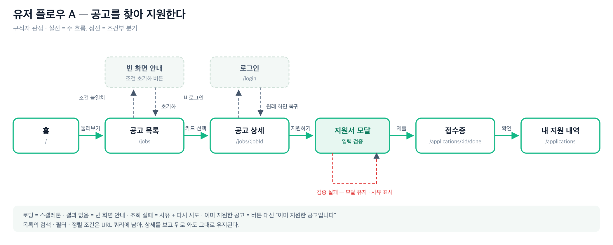
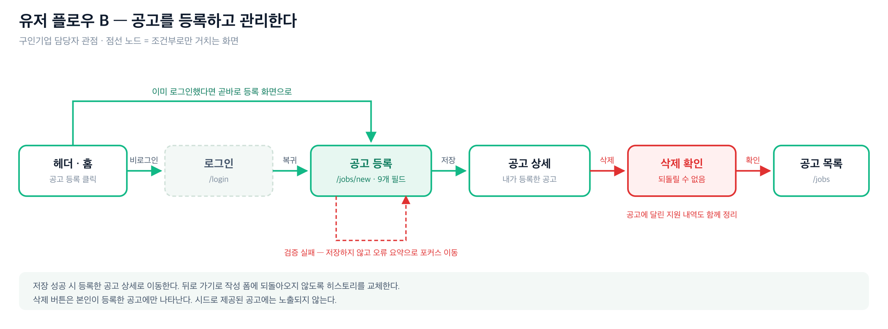

Linkple — 기능 명세서 및 유저플로우
코드잇 스프린트 · IT창업가 과정 3기 | 스프린트 미션 6 (프론트엔드 MVP) | 오보영 | 2026-08-21
1. 제품 개요와 이번 단계의 범위
Linkple은 구인기업 · 구직자 · 전문 파트너를 연결하는 채용과, 입사부터 퇴직까지의 임직원 총보상(복지)을 하나의 흐름으로 잇는 통합 HR 플랫폼입니다. 미션 5에서 이 구상을 정적 랜딩 페이지로 제시했고, 미션 6에서는 그중 채용 매칭을 실제로 동작하는 화면으로 구현했습니다.
1.1 이번 미션에 포함한 것 (In scope)
| 영역 | 내용 |
|---|
| 공고 탐색 | 목록 조회, 키워드 검색, 직군 · 고용 형태 필터, 3종 정렬 |
| 공고 등록 | 9개 필드 입력, 필드별 검증, 저장 및 목록 반영 |
| 지원 | 공고 상세에서 지원서 작성 · 제출, 접수증 확인 |
| 지원 관리 | 내 지원 내역 조회, 접수증 재확인, 지원 철회 |
| 인증(시뮬레이션) | 로그인 · 로그아웃, 보호 라우트, 로그인 후 원래 화면 복귀 |
| 출시 알림 신청 | 홈 CTA에서 이메일 검증 후 저장, 재방문 시 상태 유지 |
1.2 이번 미션에서 뺀 것 (Out of scope)
| 항목 | 사유 |
|---|
| 서버 · 데이터베이스 | 미션 6은 프론트엔드 범위. 데이터는 브라우저 저장소로 대체 |
| 실제 회원가입 · 비밀번호 인증 | 서버가 없어 신원 확인이 불가능. 로그인은 시뮬레이션 |
| 결제 · 채용 중개 · 복지몰 | 학습용 MVP이며 실제 거래를 제공하지 않음 |
| 공고 수정 | 등록 · 삭제로 흐름을 검증할 수 있어 범위에서 제외 |
| 다중 사용자 · 권한 등급 | 단일 사용자 관점으로 한정. 소유 판정은 등록자 이메일로만 수행 |
2. 사용자 정의
| 사용자 | 목표 | 이 제품에서 하는 일 |
|---|
| 구인기업 인사 담당자 | 필요한 자리를 빨리 알리고 지원자를 받는다 | 로그인 → 공고 등록 → 등록한 공고 확인 · 삭제 |
| 구직자 | 나에게 맞는 자리를 찾아 지원하고, 지원 현황을 잊지 않는다 | 공고 탐색 → 상세 확인 → 지원 → 내 지원 내역 관리 |
| 방문자(비로그인) | 서비스가 무엇인지 파악한다 | 홈 열람, 공고 목록 · 상세 열람, 출시 알림 신청 |
3. 화면 목록 (라우트)
| 경로 | 화면 | 접근 | 비고 |
|---|
| / | 홈 | 공개 | 미션 5 랜딩 섹션 승계 + 실시간 지표 + 출시 알림 폼 |
| /jobs | 공고 목록 | 공개 | 검색 · 필터 · 정렬 조건이 URL 쿼리에 유지됨 |
| /jobs/:jobId | 공고 상세 | 공개 | 지원 모달 · 삭제 확인 모달 포함 |
| /jobs/new | 공고 등록 | 로그인 필요 | 비로그인 시 /login으로 보내고 복귀시킴 |
| /applications | 내 지원 내역 | 로그인 필요 | 철회 확인 모달 포함 |
| /applications/:id/done | 지원 완료(접수증) | 로그인 필요 | 지원 흐름의 종착 화면 |
| /login | 로그인 | 공개 | 이미 로그인 상태면 원래 화면으로 되돌림 |
| * | 404 | 공개 | 홈 · 공고 탐색으로 유도 |
4. 기능 명세
FR-01 공고 목록 조회 · 탐색
| 항목 | 내용 |
|---|
| 화면 | /jobs |
| 입력 | 키워드(문자열), 직군(전체 + 7종), 고용 형태(전체 + 4종), 정렬(최신순 · 연봉 높은순 · 제목순) |
| 처리 | 필터를 모두 통과한 공고만 남기고 정렬. 키워드는 제목 · 회사 · 근무지 · 담당 업무를 대소문자 구분 없이 검색 |
| 출력 | 공고 카드 목록(직군 · 고용형태 · 등록 시점 · 제목 · 회사 · 근무지 · 요약 · 연봉), "전체 N건 중 M건" 표시 |
| 상태 처리 | 로딩 = 스켈레톤 6장 / 데이터 없음 = "아직 등록된 공고가 없습니다" + 등록 유도 / 조건 불일치 = "조건에 맞는 공고가 없습니다" + 조건 초기화 / 실패 = 사유 + 다시 시도 |
| 규칙 | 조건은 URL 쿼리(q · category · type · sort)에 반영되어, 상세를 보고 뒤로 와도 유지된다. 기본값은 쿼리에 적지 않는다 |
| 부가 | 이미 지원한 공고에는 "지원함", 본인이 등록한 공고에는 "내가 등록" 배지 표시 |
FR-02 공고 등록
| 항목 | 내용 |
|---|
| 화면 | /jobs/new (로그인 필요) |
| 입력 | 제목* · 회사명* · 근무지* · 직군* · 고용 형태* · 연봉 · 담당 업무* · 자격 요건 · 복지 혜택 (*필수) |
| 처리 | 검증 통과 시 식별자 · 등록일시 · 등록자를 붙여 저장하고 목록 맨 앞에 반영 |
| 출력 | 저장 성공 시 해당 공고 상세로 이동(뒤로 가기로 폼에 되돌아오지 않도록 replace) + 토스트 |
| 예외 | 검증 실패 시 저장하지 않고 오류 요약으로 포커스 이동. 저장 실패 시 폼을 유지한 채 사유 표시 |
검증 규칙
| 필드 | 필수 | 규칙 · 메시지 |
|---|
| 제목 | 필수 | 5자 이상 60자 이하. 미만이면 "제목은 5자 이상으로 적어 주세요." |
| 회사명 · 근무지 | 필수 | 공백 불가 |
| 직군 · 고용 형태 | 필수 | 선택하지 않으면 "선택해 주세요." |
| 연봉(만원) | 선택 | 0 이상 100,000 이하의 숫자. 초과 시 "만원 단위인지 확인해 주세요." 비우면 "회사 내규에 따름"으로 표기 |
| 담당 업무 | 필수 | 20자 이상. 미만이면 현재 글자수를 함께 알려 줌 |
| 자격 요건 · 복지 혜택 | 선택 | 줄바꿈으로 여러 항목 입력. 앞의 -, ·, • 기호는 자동 제거 |
FR-03 공고 상세 · 지원
| 항목 | 내용 |
|---|
| 화면 | /jobs/:jobId |
| 출력 | 제목 · 회사 · 근무지 · 배지, 담당 업무 / 자격 요건 / 복지 혜택 블록, 요약 카드(연봉 · 고용형태 · 근무지 · 직군 · 등록일)와 지원 버튼 |
| 지원 조건 | 로그인 필요. 비로그인 상태로 누르면 안내 후 /login으로 보내고, 로그인 직후 이 공고로 되돌린다 |
| 중복 방지 | 이미 지원한 공고면 버튼 대신 "이미 지원한 공고입니다"와 내 지원 내역 링크를 노출 |
| 소유자 기능 | 본인이 등록한 공고에만 삭제 버튼 노출. 삭제는 확인 모달을 거치며, 해당 공고의 지원 내역도 함께 정리 |
| 예외 | 없는 공고 = "찾을 수 없는 공고입니다" + 목록으로 / 로딩 = 스켈레톤 / 조회 실패 = 사유 + 다시 시도 |
지원서 폼 검증
| 필드 | 필수 | 규칙 |
|---|
| 이름 | 필수 | 2자 이상 |
| 이메일 | 필수 | 이메일 형식. 예시를 메시지에 함께 제시 |
| 연락처 | 선택 | 입력했다면 010-1234-5678 형태(하이픈 생략 허용) |
| 지원 메시지 | 선택 | 500자 이하. 입력 중 글자수 표시 |
로그인한 사용자의 이름 · 이메일은 폼에 미리 채워집니다. 제출 중에는 버튼이 로딩 상태가 되어 중복 제출을 막고, 저장에 실패하면 모달을 닫지 않고 사유를 표시합니다.
FR-04 지원 완료(접수증)
| 항목 | 내용 |
|---|
| 화면 | /applications/:applicationId/done |
| 출력 | 접수 확인 표시, 지원 공고 · 회사 · 지원자 · 이메일(마스킹) · 접수일 · 접수 번호, 다음 행동(내 지원 내역 · 공고 더 보기) |
| 예외 | 철회했거나 잘못된 주소면 "지원 내역을 찾을 수 없습니다" + 목록으로 |
FR-05 내 지원 내역
| 항목 | 내용 |
|---|
| 화면 | /applications (로그인 필요) |
| 처리 | 로그인 계정 이메일로 접수한 지원서만 최신순으로 표시 |
| 기능 | 공고 상세로 이동, 접수증 다시 보기, 지원 철회(확인 모달) |
| 상태 처리 | 없으면 "아직 지원한 공고가 없습니다" + 공고 둘러보기 유도 |
| 규칙 | 철회는 되돌릴 수 없으나, 같은 공고에 다시 지원할 수 있음을 안내 |
FR-06 로그인 · 로그아웃 (시뮬레이션)
| 항목 | 내용 |
|---|
| 화면 | /login |
| 입력 | 이메일(형식 검증), 비밀번호(6자 이상) |
| 처리 | 서버 검증 없이 형식만 확인. 통과하면 세션을 저장하고 원래 가려던 화면으로 이동 |
| 출력 | 헤더에 사용자 이름 · 이메일과 로그아웃 버튼 노출. 로그아웃 시 세션 삭제 후 홈으로 |
| 안내 | 학습용 시뮬레이션임을 화면에 명시하고, 데모 계정 자동 입력 버튼 제공 |
| 보호 라우트 | 미로그인 상태로 보호 화면 접근 시 /login으로 보내고 돌아올 주소를 함께 전달 |
FR-07 출시 알림 신청 (홈 CTA)
| 항목 | 내용 |
|---|
| 입력 | 이메일 |
| 처리 | 형식 검증 후 저장. 저장 뒤에는 폼 대신 신청 완료 상태(마스킹된 이메일)와 취소 버튼 표시 |
| 규칙 | 재방문해도 신청 상태가 유지됨. 입력값은 서버로 전송되지 않고 브라우저에만 저장된다는 사실을 화면에 명시 |
5. 데이터 모델
5.1 Job (공고)
| 필드 | 타입 | 설명 |
|---|
| id | string | 클라이언트 생성 식별자 (job_ 접두) |
| title / company / location | string | 제목 · 회사명 · 근무지 |
| category | string | 직군 7종 중 하나 |
| employmentType | string | 정규직 · 계약직 · 인턴 · 파트타임 |
| salary | number | 만원 단위. 0이면 회사 내규 |
| description | string | 담당 업무 |
| requirements / benefits | string[] | 자격 요건 · 복지 혜택 |
| createdAt | ISO 8601 | 등록 일시 |
| source | 'seed' | 'user' | Mock 데이터인지 사용자 등록인지 |
| createdBy | string | null | 등록자 이메일 (삭제 권한 판정) |
5.2 Application (지원서)
| 필드 | 타입 | 설명 |
|---|
| id | string | 접수 번호 (app_ 접두) |
| jobId / jobTitle / company | string | 지원 대상 공고 정보 (공고 삭제 후에도 표시 가능하도록 함께 보관) |
| name / email / phone / message | string | 지원자 입력값 |
| applicantEmail | string | 내 지원 내역 조회 기준 |
| status | string | 접수 완료 |
| createdAt | ISO 8601 | 접수 일시 |
5.3 저장 위치
| 키 | 내용 |
|---|
| linkple.jobs.v1 | 공고 목록 |
| linkple.applications.v1 | 지원 내역 |
| linkple.auth.v1 | 로그인 세션 |
| linkple.waitlist.v1 | 출시 알림 신청 |
첫 방문 시 Mock 공고 10건을 심습니다. 저장값이 깨져 있으면 시드로 되돌리고, 저장소를 쓸 수 없는 환경에서는 에러 화면과 다시 시도 버튼을 제시합니다.
6. 유저 플로우
6.1 화면 흐름 도식


위 두 흐름이 이번 MVP의 뼈대입니다. 아래 6.2 · 6.3에서 각 단계를 화면 · 행동 · 시스템 반응으로 풀어 씁니다.
6.2 주 흐름 A — 공고를 찾아 지원한다
| # | 화면 | 사용자 행동 | 시스템 반응 |
|---|
| 1 | 홈 | 공고 둘러보기 클릭 | 공고 목록으로 이동 |
| 2 | 공고 목록 | 직군 "개발" 선택, 키워드 입력 | 결과를 즉시 좁히고 "전체 N건 중 M건" 갱신. 조건을 URL에 반영 |
| 3 | 공고 목록 | 카드 선택 | 공고 상세로 이동. 탭 제목이 "제목 · 회사"로 바뀜 |
| 4 | 공고 상세 | 지원하기 클릭 | 비로그인이면 안내 후 로그인 화면으로 보내고 돌아올 주소를 기억 |
| 5 | 로그인 | 이메일 · 비밀번호 입력 | 검증 후 세션 저장 → 4단계의 공고 상세로 복귀 |
| 6 | 공고 상세 | 지원하기 클릭 | 지원서 모달 열림. 첫 입력 칸으로 포커스 이동, 배경 스크롤 잠금 |
| 7 | 지원서 모달 | 내용 입력 후 제출 | 검증 실패 시 모달을 유지하고 해당 필드에 사유 표시 |
| 8 | 지원서 모달 | 수정 후 재제출 | 버튼이 로딩 상태로 바뀌어 중복 제출 차단 → 저장 |
| 9 | 접수증 | — | 접수 번호 · 지원 정보 표시(이메일은 마스킹), 토스트로 결과 알림 |
| 10 | 내 지원 내역 | 이동 | 방금 접수한 건이 목록에 표시. 새로고침해도 유지 |
6.3 주 흐름 B — 공고를 등록한다
| # | 화면 | 사용자 행동 | 시스템 반응 |
|---|
| 1 | 홈 / 헤더 | 공고 등록 클릭 | 비로그인이면 로그인 화면으로 보내고 복귀 주소 기억 |
| 2 | 로그인 | 로그인 | 공고 등록 폼으로 복귀 |
| 3 | 공고 등록 | 빈 폼 제출(실수) | 저장하지 않고 상단 오류 요약("5곳을 확인해 주세요")으로 포커스 이동 + 필드별 메시지 |
| 4 | 공고 등록 | 값 입력 | 이미 지적한 필드는 고치는 즉시 오류 해제 |
| 5 | 공고 등록 | 제출 | 저장 후 등록한 공고 상세로 이동(폼으로 되돌아가지 않음) + 토스트 |
| 6 | 공고 상세 | — | "내가 등록한 공고" 배지와 삭제 버튼 노출 |
| 7 | 공고 상세 | 삭제 클릭 → 확인 | 공고와 그에 달린 지원 내역을 함께 정리하고 목록으로 이동 |
6.4 예외 흐름
| 상황 | 화면 처리 |
|---|
| 데이터를 불러오는 중 | 목록 · 상세 · 접수증 모두 실제 레이아웃과 같은 골격의 스켈레톤 표시 |
| 등록된 공고가 하나도 없음 | "아직 등록된 공고가 없습니다" + 공고 등록하기 버튼 |
| 검색 · 필터 결과가 없음 | "조건에 맞는 공고가 없습니다" + 조건 초기화 버튼 (앞의 경우와 구분) |
| 지원 내역이 없음 | "아직 지원한 공고가 없습니다" + 공고 둘러보기 버튼 |
| 데이터 조회 실패 | 사유를 문장으로 제시하고 다시 시도 버튼 제공 |
| 존재하지 않는 공고 · 접수증 | 이미 삭제되었거나 주소가 잘못되었음을 알리고 목록으로 유도 |
| 없는 주소 | 404 화면 + 홈 · 공고 탐색 버튼 |
| 화면 렌더 중 예외 | 흰 화면 대신 오류 안내 · 원인 · 새로고침/홈 버튼. 저장 데이터는 무사함을 명시 |
7. 데이터 계층 설계
화면은 데이터가 어디서 오는지 알지 못합니다. 접근 경로를 한 곳(repository)으로 모으고, 같은 인터페이스를 따르는 두 구현을 환경변수로 바꿔 끼웁니다.
| 모드 | 조건 | 동작 |
|---|
| localStorage (기본) | 환경변수 없음 | 브라우저 저장소를 읽고 씀. 배포본이 이 모드이므로 서버 없이 동작 |
| Mock API | VITE_API_BASE_URL 설정 | JSON Server(db.json)를 REST API처럼 호출 |
인터페이스: loadAll · createJob · deleteJob · createApplication · deleteApplication.
미션 7에서 실제 API로 전환할 때 바꿀 파일은 이 하나입니다.
8. 비기능 요구사항
| 항목 | 내용 |
|---|
| 반응형 | 모바일 퍼스트. 390px에서 가로 스크롤이 발생하지 않음. 900px 이상에서 헤더 메뉴 · 2단 레이아웃 전환 |
| 접근성 | 본문 바로가기, 키보드 포커스 표시, 모달 포커스 가두기 및 첫 입력 칸 포커스, 폼 오류의 aria 연결, 결과 알림의 aria-live, 모션 최소화 설정 존중 |
| 일관성 | 버튼 · 입력 · 카드 · 배지 · 모달 · 토스트 · 상태 표시를 공통 컴포넌트로 통일. 색 · 여백 · 타이포는 미션 5의 토큰을 승계 |
| 탐색성 | 화면마다 브라우저 탭 제목이 다름. 목록 조건은 URL에 남아 공유 · 뒤로가기에 견딤 |
| 안전 | 삭제 · 철회는 확인 모달을 거침. 제출 중 버튼 잠금으로 중복 요청 차단 |
9. 검증 결과
| 항목 | 결과 |
|---|
| 정적 분석 (ESLint) | 0건 |
| 자동 테스트 (Vitest) | 6개 파일 41개 전부 통과 — 폼 검증 규칙, 표기 함수, 데이터 계층(시드 · 파손 복구 · 영속 · 연쇄 정리), 공통 컴포넌트, 에러 경계 |
| 빌드 | 통과 |
| 브라우저 워크스루 | 탐색 · 등록 · 지원 · 철회 · 삭제 · 로그인 복귀 · 새로고침 유지 · 404, 콘솔 오류 0건 |
| 배포 확인 | 주요 8개 주소 직접 진입 정상(SPA 새로고침 대응), 실제 화면 렌더 확인 |
| 반응형 | 390px 전 화면 가로 스크롤 0 |
10. 다음 단계 (미션 7 연결)
| 할 일 | 준비된 것 |
|---|
| 실제 API 연동 | 데이터 접근이 repository 한 곳으로 모여 있어 구현체만 교체하면 됨 |
| API 명세 작성 | 본 문서 5장의 데이터 모델과 4장의 기능별 입력 · 출력이 그대로 엔드포인트 후보 |
| 인증 전환 | 로그인 흐름 · 보호 라우트 · 복귀 처리는 완성. 검증만 서버로 옮기면 됨 |
| 로딩 · 오류 처리 | 비동기 실패 경로와 화면이 이미 갖춰져 있어 네트워크 오류에 그대로 대응 |
본 문서와 산출물은 학습 목적이며 실제 상용 서비스가 아닙니다. 화면의 기업 · 공고 · 지원자 정보는 모두 가상 데이터이고, 입력값은 서버로 전송되지 않습니다.